RouteClock 实验结果、机制与研究价值综合报告
导师汇报完整版｜正式运行 run_20261117_001732｜结果截止 2026-11-18 06:12（北京时间）
本报告包含完整正面和负面结果；所有图表可在 figures 与 tables 目录复用。参数建议均未执行。
一、先给老师看的结论
本研究考察一个具体问题：多架无人机共用毫米波通信与感知资源时，系统能否利用过去观察到的飞行路线，预测未来指向及其有效期，从而少做感知、保持较窄波束，并提高通信服务质量。程序中有两条互补但不同的实验线：FIVE 检验预测中心、误差包络和束宽/刷新间隔选择；MPC 检验个体失效风险是否能改善跨时间的感知与通信安排。两条线应分别汇报，不能把其中一条的优势当作另一条已经证实的结果。
最可靠的正面结果有三项。第一，RC 的路线记忆与运动融合在长时域预测上明显优于 IMM：10 秒角度 RMSE 从 4.465° 降至 1.502°，约降低 66.4%。第二，在主闭环实验中，RC 优于纯路线 P、冻结 Chronos C 和带路线协变量的 CR_raw，说明小型结构化模型具有实际竞争力。第三，joint_mpc 相对轮询 rotation 将感知占比从 5.000% 降至 2.594%，相对减少约 48.1%，网络吞吐量均值仍在约 1197 Mbps，和轮询的差值很小。
必须同时陈述的边界：主闭环实验里 RC 仍比 IMM 少 18.023 Mbps（约 1.48%），保持段 3 dB 失效率也更高；joint_mpc 相对 age_mpc 仅再省约 0.106 个百分点感知时间，未观察到吞吐量提升，且几何失效与公平性有所退步；Chronos 的离线预测通常优于 RC。现有证据支持“有效的路线预测与资源节省机制”，尚不支持“RC 在所有环境中通信最好”或“个体风险 MPC 全面胜过年龄 MPC”。
建议保留的核心数字
| 比较 | 主要结果 | 证据范围 |
|---|
| RC vs IMM，10 s 离线 | 角度 RMSE 1.502° vs 4.465°，降低 66.4% | 400 条测试路线；路线内先平均 3 个锚点 |
| RC vs P，主闭环 | 吞吐量 +5.331 Mbps；保持段失效减少约 0.098 pp | 30 个配对世界；LightGBM，seed 7 |
| RC vs C / CR_raw，主闭环 | 吞吐量分别 +13.862 / +21.539 Mbps | 相同 30 个物理世界、共同控制框架 |
| RC vs IMM，主闭环 | 吞吐量 −18.023 Mbps；保持段失效增加约 0.318 pp | 明确负面结果，三种训练种子方向一致 |
| joint_mpc vs rotation | 感知占比 −2.406 pp；吞吐量 +0.954 Mbps | 30 个配对世界；吞吐差 CI 包含 0 |
| joint_mpc vs age_mpc | 感知占比 −0.106 pp；吞吐量 −1.280 Mbps | 增量价值有限，存在可靠性代价 |
pp 表示百分点。例如 5.000% 降至 2.594% 是降低 2.406 个百分点，也可以说相对下降 48.1%；二者不能混用。报告中的置信区间主要为 2,000 次配对自助法、95% 区间，属于逐项描述性区间，未进行全报告多重比较校正。
二、实验到底完成了哪些，哪些没有做
最终状态记录为通过 789 个编排任务、延后 45 个任务，无失败任务。789 包括数据、模型、评估及网络作业等编排单元，不等于 789 个独立实验世界。批准范围已完成；原始范围未全部完成。正式结果为 645 场 FIVE 网络策略运行、120 场 MPC 策略运行、2,400 条离线数据任务，以及 143 个配对刷新干预事件。
已完成矩阵
| 实验块 | 范围 | 策略运行数 | 独立性说明 |
|---|
| FIVE 主比较 | 30 世界 × F/I/P/RC/C/CR_raw | 180 | 每个世界 6 种策略配对 |
| RC 动作消融 | 30 世界 × fixed/width_only/interval_only | 90 | 与主实验 RC 配对，可共用参照 |
| 路线复用率 | 20 世界 × 3 水平 × I/RC | 120 | 每个水平内 20 对；跨水平不是新增独立样本 |
| 训练 seed 11、19 | 各 20 世界 × I/P/RC/C/CR_raw | 200 | 复用物理世界，检验模型训练敏感性 |
| TabPFN 误差头复核 | 11 世界 × I/P/RC/C/CR_raw | 55 | 与 LightGBM 前 11 个世界匹配，探索性 |
| MPC 四策略 | 30 世界 × rotation/myopic/age_mpc/joint_mpc | 120 | 单独实验线，不能与 FIVE 数值直接作因果对比 |
| 离线数据 | 训练 1200、验证 400、校准 400、测试 400 | 2400 条路线 | 测试每条 3 锚点，校准每条 1 锚点 |
| 刷新回放 | 2 个世界，75 + 68 个事件 | 143 个事件 | 世界内相关，不是 143 个独立世界 |
2026-11-17 23:54 按约 7—8 小时剩余预算调整实验范围，保留 TabPFN 的场景 0—10，场景 11—19 的 45 场运行延后；两个 LightGBM 复核种子均补足 20 场景。该决定在已经查看部分结果之后作出，必须披露为事后缩减范围。TabPFN 结果适合比较趋势与提出假设，不宜作为预注册完整复核的替代。此次报告没有修改科学模型、无线环境或实验参数，也没有补跑改变研究结论的新实验。
配置文件包含很多设计中的扩展：更多 N、预算扫描、64×64 阵列、真实轨迹、额外误差头等。它们出现在设计文件中不等于已经运行。报告只把本次正式目录中落盘并通过完成检查的实验作为主要证据；历史 pilot、demo 和未运行 V2 方案均不混入主结果。
三、让不了解程序的人理解整个机制
3.1 为什么预测位置会影响通信
毫米波阵列像一束可转向的窄光：指向准确时阵列增益高，能够用更高调制编码速率；指向偏差过大时增益下降。扩大波束能容忍更大误差，但通常牺牲阵列增益。重新感知可以更新位置，却要占用所有无人机共享的服务时间。因此系统需要同时判断“往哪里指”“这个判断能信多久”“要不要现在花时间更新”。
在仿真中，轨迹真值只用于生成观测、结算通信效果和事后评分；预测器读取的是过去的带噪观测。空间路线记忆由已经观察到的有向片段和弧长建立，不能直接读取生成器的真实未来路线。过去多次走过类似空间路线时，知道“现在走到路线哪里”比单纯外推当前速度更有价值；速度变化、停车与绕路又会使这种记忆失效。
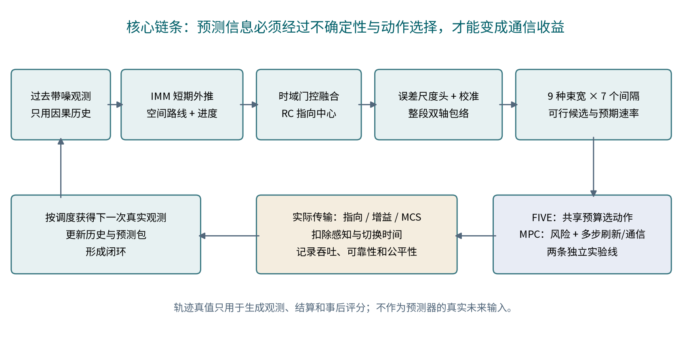
机制总图：从因果历史到闭环通信；FIVE 与 MPC 的控制模块不同，不能把两者结果合并为同一个已验证系统。
3.2 方法名字及公平比较关系
方法对照
| 名称 | 预测/决策机制 | 应如何理解 |
|---|
| I / IMM | 交互多模型运动预测，适应短期运动 | 强短期基线，观测频繁时尤其有效 |
| P | 空间路线 + 进度预测 | 利用路线形状，处理同一路线不同速度 |
| RC | w(h)P + [1−w(h)]I；学习随时域变化的融合权重 | 本研究的结构化融合中心 |
| C | 冻结 Chronos-2，无显式路线协变量 | 预训练时序模型对照，不在本项目从头训练 |
| CR_raw | Chronos 加因果路线协变量，直接输出 | 不是 RC，也不是另一个带 IMM 门控的 CR-G |
| F | IMM 指向 + 验证集选择的固定束宽与周期 | 当前选中 32×32、2 s；强固定策略 |
| LightGBM / TabPFN | 预测误差尺度或有效期的头 | 主对比中主要改变不确定性估计，不是替换 RC 路线机制 |
旧设计文档出现过 CR、CR-G、H 等名称，正式五中心结果使用 I、P、RC、C、CR_raw。汇报请按实际结果文件的名字，避免把旧设计中的能力写给本次未运行的方法。F 使用 IMM 指向；动作消融 fixed 使用 RC 指向。因此 F 和 fixed 不是同一个消融。
3.3 RC：空间路线、进度模型与融合门控
路径记忆不是简单按时间周期重复历史坐标。程序保留有向的观察片段，通过位置创新、航向一致性与进度连续性匹配当前位置，最多保留多个匹配假设；在交叉路口避免仅按距离误选分支。未来沿弧长推进，巡航、减速、保持三类进度状态描述不同速度与停车。偏离路线时单独保存片段，未观察过的未来仅作切向外推，并标记缺乏已观察支持；预测点不会被当成新观测写回记忆。
RC 的门控为小型 logistic 模型：输入包括预测时域、路径匹配创新、航向创新、匹配熵、进度不确定性、已观察路线支持、过去预测的实际误差、两个专家的分歧，以及停车/减速概率等因果特征。输出 w(h)∈[0,1]，以位置加权形成最终指向中心。训练目标是最终融合中心的方位/俯仰角平方误差，并用验证集选正则化；下游误差头训练使用按路线分组的折外门控输出，降低同样本拟合造成的乐观偏差。
这种结构的优势是可解释、无需为主 RC 调用大型时序基础模型，并能区分空间路线与沿路速度。它的局限是单一门控目标仍是预测误差，而不是通信净收益；当前结果还显示门控在部分短期/偏航事件中对路线的权重过高。具备自适应结构不代表已经学到了理想的回退行为。
3.4 从点预测到可行动的误差包络
每次获得真实新观测后，系统发布一份预测包：未来 0—10 秒的中心轨迹、角度误差包络、路线诊断和门控权重。在 0、0.5、1、2、3、5、8、10 秒对两个角轴查询，共 16 行。尺度头预测累计最大绝对角误差的对数，经过正值化及累计最大操作，得到随时域不下降的包络。随后在 400 条独立校准路线的单个锚点上，取整段、双轴最大归一化误差的有限样本分位数进行校准，目标 α=0.1。
“90% 覆盖”指新路线上的整段、双轴事件的边际覆盖目标，不是每个时刻有 90% 成功，也不是闭环调度下每架无人机都有 90% 可靠性保证。闭环决定何时观察，会改变误差分布；分组条件覆盖、选中动作的覆盖与在线自适应覆盖需要另查。宽包络容易覆盖真值，却可能只能认证宽波束或短刷新间隔；因此包络质量必须同时看覆盖率、宽度、能否发出动作和有效期。
主网络比较采用 common_local 误差头，其输入剔除了许多显式路线质量特征，只保留共同局部动力学信息与查询信息。这使不同中心的比较更一致，但可能不能充分表达“这段路线是否可信”。full 头额外加入完整诊断；duration 头直接预测固定束宽首次超过 3 dB 的有效期。这两者在本轮主要有离线诊断结果，不能把它们的优势当作主网络 RC 已实现的优势。
本轮尺度头的训练上下文为 7200 行，来自 1200 条训练路线、每条 3 个锚点以及双角轴标签；查询时仍使用整份已拟合模型或冻结上下文。TabPFN 使用 V2.5、4 个估计器与 fit_with_cache；它不是在本项目中从头训练基础网络。Chronos-2 约 1.2 亿参数，冻结，最多 720 个历史步、20 个未来步。RC 门控只约 16 个输入特征；主 RC 的复杂度主要在因果路线维护和重复更新，不在超大参数神经网络。模型体量、训练数据量和闭环调用次数是三个不同的规模概念。
3.5 FIVE 如何选波束和刷新间隔
每个轴可用 8、16、32 个阵元，构成 9 种子阵列组合；刷新间隔候选为 0.5、1、2、3、5、8、10 秒。程序将角度包络映射为最坏阵列损失，保留整个候选区间内损失不超过 3 dB 的动作，再计算保守预期速率。去掉同时在速率和间隔上被支配的候选后，用贪心预算修复及坐标改进选择联合动作。其近似目标为 [1−Σ(c/Δi)]×平均预期速率，约束共享感知负载不超过预算。
这是共享时间预算下的动作选择器，不是下面那套跨多个未来时刻展开的 MPC。实际服务由事件循环与 token bucket 兑现感知预算，TDMA 分配数据时间；只有新真实观测才更新该无人机预测包，未观察期间按原发布时刻的年龄推进，不能伪造“刚更新”的预测。
3.6 MPC：age_mpc 与 joint_mpc 的精确差别
两者共享 RC 指向融合、角度包络、束宽有效期、条件速率模型、慢层刷新搜索、快层通信分配和服务欠账惩罚。差别集中在未来失效概率：age_mpc 使用只随预测年龄变化的总体风险曲线；joint_mpc 使用当前发布包特征得到个体化风险曲线。两者都以 E[R(h)]=(1−p(h))R_good(h)+p(h)R_bad(h) 构成各束宽的预期收益，因此 age_mpc 并非完全不使用个体信息，它仍共享个体条件速率模型。
MPC 风险/速率训练使用 8 个网络世界，风险校准另有 4 个世界，角度管校准 30 个世界，最终测试 30 个世界；不同数据用途由命名空间区分。虽然每个世界能生成很多发布样本，独立场景数仍有限，尤其风险尾部与场景外泛化需要更大范围复核。
风险事件定义为纯路线 P 在参考 32×32 波束下累计首次超过 3 dB，并不是最终 RC 实际通信的中断标签。分类器与两组条件速率回归器使用 ExtraTrees，风险经过单调累积与 isotonic 校准。风险标签更准，可以改善状态描述，但还必须经过条件速率、束宽有效期和未来刷新价值估计，才会影响控制。
MPC 每步 0.062 秒，慢层每 4 步重算；慢层前视 32 步即 1.984 秒，快层 8 步即 0.496 秒，搜索宽度 8。慢层比较等待或刷新一架无人机的候选序列，快层用线性规划分配通信时间并考虑欠账；只执行滚动窗口的第一步。未来刷新后的状态是从当前包近似重置，不能知道真正未来观测。这一近似是后文刷新价值误差的重要待审计环节。
四、环境参数、指标与统计口径
本次核心环境
| 项目 | 实际设置 | 影响 |
|---|
| 网络规模 | 16 架；预热 180 s、服务 180 s | FIVE 单场真实服务时长；MPC 为 180.048 s |
| 感知开销/预算 | 每次 3.1 ms；共享预算 5% | 平均均匀刷新间隔下界约 0.992 s |
| 无线链路 | 28 GHz，400 MHz，20 dBm，总阵列 32×32 | 子阵列变化同时改变增益与容错 |
| 噪声与阴影 | 噪声系数 7 dB；阴影 std 3 dB、相关 2 s | 不只是确定性几何误差 |
| 数据服务 | TDMA 粒度 10 ms，切换开销 0.1 ms | 共享感知和切换时间从服务总时间扣除 |
| 位置世界 | 椭圆/8 字/扫描；初始水平距离 220—400 m、高度 80—100 m | radio 配置的名义范围不能替代生成器实际范围 |
| 行为组成 | 稳定、变全局速度、变分段速度、停车、绕路回归、无复用 | 16 架主要为 4/3/3/2/2/2，部分组数轮换 |
| 主场景复用 | 结构可复用 14/16；持续沿路线 12/16 | 可复用不等于此刻一定服从路线 |
| 计算延迟 | simulated_model_latency_s=0 | 推理计算时间没有扣进通信时钟 |
链路有效速率由 B×0.85×SE×(1−BLER) 给出，7 档频谱效率最高 5.1152，理想零误块上限为 1739.168 Mbps，再扣感知和切换。实际 MCS 根据预测链路质量选择，BLER 是真实 SNR 与门限差的 logistic 函数。因此吞吐不只由 3 dB 事件决定。不能看到最高均值 1200 Mbps 就判断已经完全饱和；单场诊断中主要在倒数第二和最高 MCS 之间切换。
必须分清的指标
| 指标 | 分母/定义 | 不能等同于 |
|---|
| net_mbps | 全网成功有效比特 / 服务墙钟秒 | 单用户速率、无线原始峰值 |
| angular_RMSE_deg | 一个锚点内时间×双轴均方根，再按锚点、路线平均 | 终点二维角误差范数、所有样本先混合的 RMSE |
| ADE / FDE | 时域内平均位置距离 / 末端位置距离，单位 m | 角误差；不同距离的相同米误差不等价 |
| hold_failure_fraction | 有任一时刻几何损失>3 dB 的保持段数 / 保持段总数 | 丢包率、BLER、数据时间失效率 |
| narrow_share | 32×32 保持时长 / (服务时长×无人机数) | 实际获分配数据时隙中窄束比例 |
| outage_data_fraction | 实际 SNR 低于最低 MCS 门限的数据时间比例 | 所有 BLER、所有 3 dB 几何失效 |
| worst10_mbps | 每场最差 ceil(0.1N)=2 架的平均吞吐量 | 第 10 百分位插值或全网吞吐量 |
| MPC over3_pct | MPC 实际数据服务的 3 dB 损失占比，已是百分数 | FIVE 的保持段失效比例 |
| issued / early_failure | 离线 32×32 动作可发布比例 / 提前失效 | 覆盖率或所有束宽均不可用 |
| mean_update_cpu_s | 命名如此，但包含一次完整更新的实测耗时 | 纯 CPU 核时或孤立神经网络前向延迟 |
统计以物理世界或路线为单位配对：同一世界换策略，计算差值后重采样；离线先对同一路线的 3 个锚点取平均。报告不把 1200 个离线锚点、同一世界的多个训练种子或 143 个相关刷新事件当作独立样本放大置信度。主表通常为先算每场比率再取场景均值，不能随意换成汇总分子/汇总分母。不同指标的区间不是联合覆盖；探索性子组很多，不能逐个挑显著项当确认性发现。
未观察到显著吞吐差异不等于证明相等；需要业务给出的等效界限与相应设计才可正式声称非劣或等效。旧汇总中的“2 个百分点失效等效界”相对 0.1%—0.5% 的实际失效率十分宽松，本报告不以它证明相同可靠性。
五、离线预测：强项、弱项与产生原因
offline_horizons.csv
| 时域 s | 模型 | ADE m | FDE m | 角 RMSE° | 角 p95° |
|---|
| 1.000 | C | 2.474 | 3.707 | 0.248 | 0.506 |
| 1.000 | CR_raw | 2.402 | 3.574 | 0.241 | 0.492 |
| 1.000 | I | 3.800 | 6.903 | 0.538 | 1.209 |
| 1.000 | P | 2.581 | 4.067 | 0.268 | 0.556 |
| 1.000 | RC | 2.510 | 3.937 | 0.262 | 0.542 |
| 2.000 | C | 3.524 | 5.486 | 0.368 | 0.791 |
| 2.000 | CR_raw | 3.522 | 5.790 | 0.366 | 0.798 |
| 2.000 | I | 7.074 | 13.901 | 1.030 | 2.355 |
| 2.000 | P | 3.991 | 6.825 | 0.433 | 0.949 |
| 2.000 | RC | 3.860 | 6.568 | 0.420 | 0.914 |
| 5.000 | C | 6.213 | 9.836 | 0.675 | 1.511 |
| 5.000 | CR_raw | 6.862 | 11.754 | 0.745 | 1.678 |
| 5.000 | I | 18.040 | 37.056 | 2.458 | 5.566 |
| 5.000 | P | 8.075 | 14.560 | 0.922 | 2.097 |
| 5.000 | RC | 7.753 | 13.995 | 0.871 | 1.973 |
| 10.000 | C | 8.797 | 12.173 | 0.969 | 2.206 |
| 10.000 | CR_raw | 10.710 | 16.251 | 1.176 | 2.666 |
| 10.000 | I | 36.662 | 71.767 | 4.465 | 9.715 |
| 10.000 | P | 13.879 | 24.616 | 1.603 | 3.671 |
| 10.000 | RC | 13.385 | 23.842 | 1.502 | 3.447 |
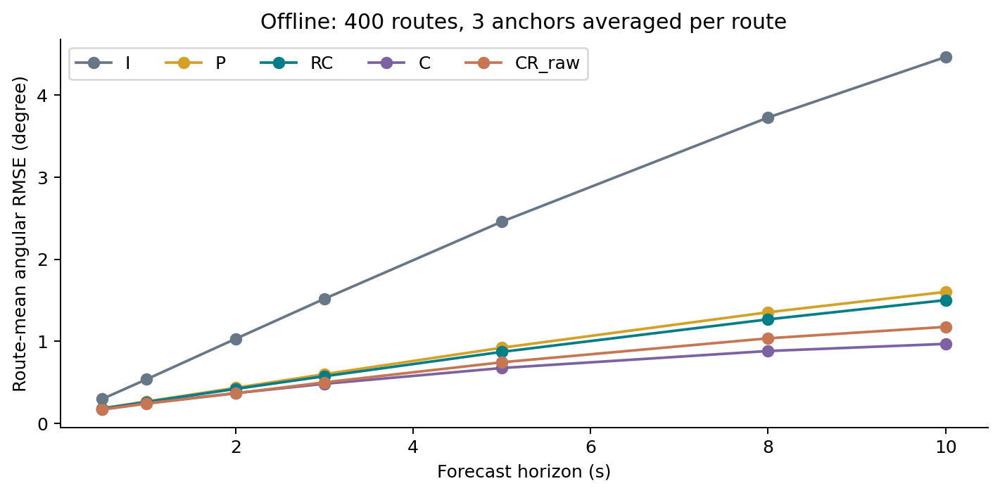
图 1：400 条测试路线的预测曲线。每条路线先平均锚点，误差随预测时域增加；所有方法使用同一离线观测协议。
RC 在 1、2、5、10 秒都比 IMM 的总体平均误差小，但差异主要由较难、观测较稀疏和较长时域的条件贡献。10 秒 RC 的 ADE 约 13.385 m，IMM 为 36.662 m；角 RMSE 的配对差为约 −2.963°，95% 区间约 [−3.525, −2.431]。空间路线限制了长期外推偏离；进度模型允许沿同一空间曲线以不同速度推进。这是结构化记忆的主要已证实优势。
RC 相对纯 P 的 10 秒角误差从约 1.603° 降至 1.502°，降幅约 6.3%，远小于相对 IMM 的改进。主要贡献来自路线表示本身，门控属于进一步修正，不能把全部 66.4% 改进都归给融合门控。配对 RC−P 角 RMSE 约 −0.100°，区间约 [−0.204, −0.018]，平均上有收益，但分组并非处处更优。
Chronos C 的 10 秒角 RMSE 约 0.969°，优于 RC 的 1.502°；CR_raw 为约 1.176°，加入路线协变量后反而不如 C。路线信息不是在所有融合方式中都自动有益：输入协变量的偏差、基础模型对协变量的使用方式、预测分布与数据模式匹配都可能影响结果。目前只能说“直接提供这套路线协变量未提升此对照”，不能推断路线信息本身无用，因为 P、RC 的结果说明它有结构性价值。
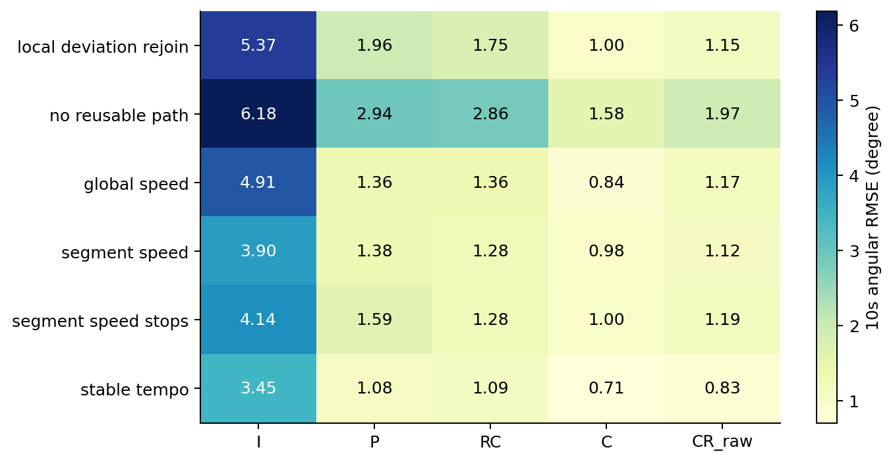
图 2：六类运动行为的 10 秒角 RMSE。颜色仅用于比较误差，组样本数量不同；完整数值见 offline_behavior_10s.csv。
在稳定节奏组，RC 约 1.094°，略差于 P 的 1.075°；全局变速组 RC 约 1.360°、P 约 1.357°，基本接近。停车组 RC 约 1.279°、P 约 1.588°，绕路回归组 RC 约 1.745°、P 约 1.963°，门控的收益更明显。无可复用组 RC 仍为约 2.858°，比 P 的 2.936°只改善少量，表明“有回退专家”并不等于充分识别了无复用状态。C 在该组约 1.579°，仍更强。
5.1 观测协议揭示了离线平均数的构成
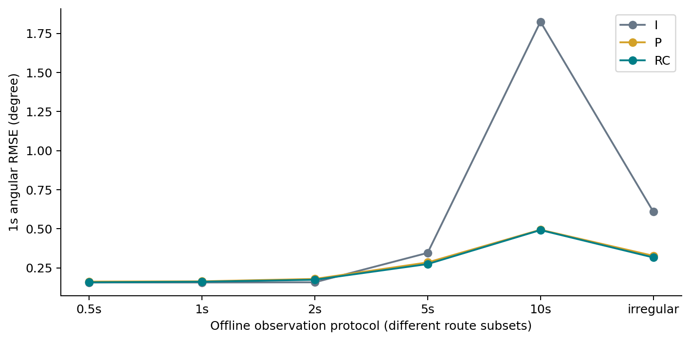
图 3：1 秒预测误差按离线观测间隔分组。各组是不同路线子集，不能把组间差异完全解释为改变间隔的因果效应。
在观测间隔 0.5、1、2 秒的离线子集中，IMM 的 1 秒角 RMSE 约 0.156、0.156、0.157°，RC 约 0.157、0.161、0.174°，并没有短期优势。10 秒观测间隔子集中，IMM 约 1.825°，RC 约 0.492°。因此“离线 RC 全局均值更好”与“在线频繁更新时 IMM 很强”并不矛盾：离线均值涵盖大量稀疏观测，闭环主要运行在很短预测年龄。需要在相同历史和相同年龄上比较才能定位原因。
5.2 事件诊断：门控有没有及时识别路线失效
gate_event_means.csv
| 事件 | 时域 s | 路线权重 | 支持 | I 终点角误差° | P 终点角误差° | RC 终点角误差° |
|---|
| detour_off_path | 1 | 0.910 | 0.679 | 0.555 | 0.721 | 0.706 |
| detour_off_path | 10 | 0.977 | 0.667 | 4.239 | 3.570 | 3.537 |
| on_path_upcoming_turn | 1 | 0.974 | 0.920 | 1.011 | 0.514 | 0.481 |
| on_path_upcoming_turn | 10 | 0.988 | 0.898 | 8.252 | 2.640 | 2.278 |
| other | 1 | 0.943 | 0.770 | 1.480 | 0.597 | 0.597 |
| other | 10 | 0.974 | 0.741 | 11.287 | 3.933 | 3.806 |
| post_detour_on_path | 1 | 0.970 | 0.933 | 0.356 | 0.474 | 0.395 |
| post_detour_on_path | 10 | 0.993 | 0.877 | 3.638 | 1.696 | 1.653 |
事件表是终点二维角误差范数，不是前表整段双轴 RMSE。绕路离轨事件的 1 秒误差中，I 约 0.555°，P 约 0.721°，RC 约 0.706°；此时路线权重仍约 0.910，说明回退幅度较小。即将转弯的沿路线事件，10 秒 I 约 8.252°，P 约 2.640°，RC 约 2.278°，路线预测优势很大。改进方向应是识别何时路线更有用，而不是简单把路线权重整体调高或调低。事件数量、路线内相关与事后分组限制了显著性解释，当前用作机制诊断。
六、误差头与有效期：准不准，以及能不能用于行动
offline_validity.csv
| 误差头 | 中心 | 变体 | 整段覆盖 | 半宽° | 可发布比例 | 平均有效期 s | 已发布提前失效 |
|---|
| lightgbm | C | common_local | 0.902 | 3.422 | 0.868 | 1.309 | 0.010 |
| lightgbm | CR_raw | common_local | 0.904 | 3.899 | 0.850 | 1.430 | 0.007 |
| lightgbm | I | common_local | 0.876 | 13.071 | 0.804 | 1.315 | 0.008 |
| lightgbm | P | common_local | 0.902 | 5.515 | 0.800 | 1.437 | 0.015 |
| lightgbm | RC | common_local | 0.902 | 5.414 | 0.826 | 1.482 | 0.013 |
| lightgbm | RC | duration | — | — | 0.695 | 2.329 | 0.035 |
| lightgbm | RC | full | 0.929 | 5.441 | 0.838 | 1.785 | 0.006 |
| lightgbm | RC | global | 0.921 | 7.062 | 0.000 | 0.000 | — |
| tabpfn | RC | common_local | 0.907 | 5.515 | 0.828 | 1.471 | 0.011 |
| tabpfn | RC | duration | — | — | 0.682 | 2.376 | 0.027 |
| tabpfn | RC | full | 0.917 | 4.675 | 0.887 | 2.167 | 0.006 |
| tabpfn | RC | global | 0.921 | 7.062 | 0.000 | 0.000 | — |
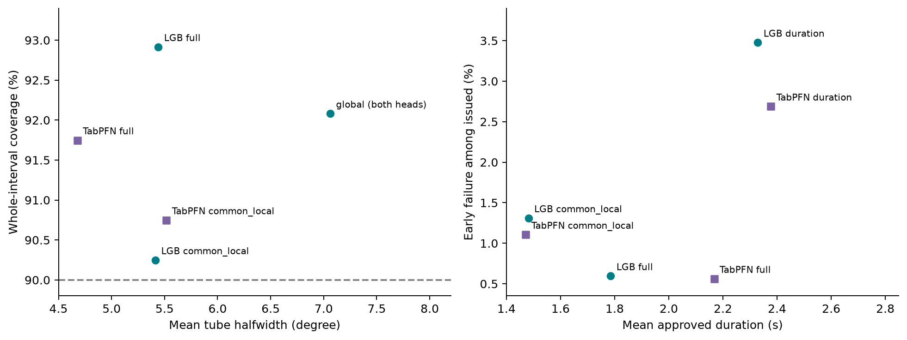
图 4：RC 的覆盖、宽度、认证时长和提前失效共同体现误差头的可用性。global 无已发布 32×32 动作时，条件失效率为空，不是零风险。
LightGBM common_local 的 RC 覆盖约 90.25%，平均半宽 5.414°，32×32 可发布比例约 82.58%，平均认证时长 1.482 秒。其 1200 个测试锚点中 991 个可发布、13 个提前失效，因此已发布条件失效率约 1.31%；不能用 13/1200≈1.08% 替代该条件指标。I 的同口径覆盖约 87.58%，按路线聚类的描述性 95% bootstrap 区间约 [85.50%, 89.58%]，低于名义 90%，提醒我们有限测试误差和分布差异仍存在，不能对每个方法都直接声称达到目标。
full 特征有潜力：LightGBM RC 的平均认证时长约 1.785 秒、覆盖约 92.92%；TabPFN full 约 2.167 秒、覆盖约 91.75%、半宽约 4.675°。相对各自 common_local，这说明路线诊断可以提高不确定性的区分能力。但这属于同一离线测试上的比较，未完成 full 头的正式闭环复核，仍需用新的验证与测试世界检验能否转化为吞吐或感知收益。
global RC 包络覆盖约 92.08%，但平均半宽约 7.062°，在测试锚点中无法认证 32×32 最窄波束。它不是完全无法通信，较宽子阵列仍可能可用。这个例子直观说明高覆盖率本身不足以证明控制价值。
duration 直接时长头的平均批准时长约 2.329 秒（LightGBM）和 2.376 秒（TabPFN），但可发布比例只有约 69.5% 和 68.2%，已发布提前失效率约 3.48% 和 2.69%。直接学决策量可能更长，但会牺牲可用性或风险；该头没有角度包络覆盖与半宽，表中留空。平均批准时长包含不能发布时的零值，不能与仅发布动作的条件平均混淆。
七、FIVE 主闭环：结果不是单一排名
main_means.csv
| 策略 | 吞吐 Mbps | 保持段失效 % | 感知 % | 弱 10% Mbps | 窄束占比 % | 窄束保持 s |
|---|
| C | 1187.811 | 0.120 | 4.159 | 63.859 | 86.980 | 1.168 |
| CR_raw | 1180.134 | 0.479 | 4.081 | 62.241 | 85.272 | 1.250 |
| F | 1233.554 | 7.468 | 2.471 | 68.183 | 100.000 | 1.985 |
| I | 1219.695 | 0.133 | 4.285 | 67.599 | 98.160 | 1.148 |
| P | 1196.342 | 0.549 | 4.221 | 65.174 | 90.318 | 1.178 |
| RC | 1201.672 | 0.451 | 4.257 | 65.380 | 92.027 | 1.158 |
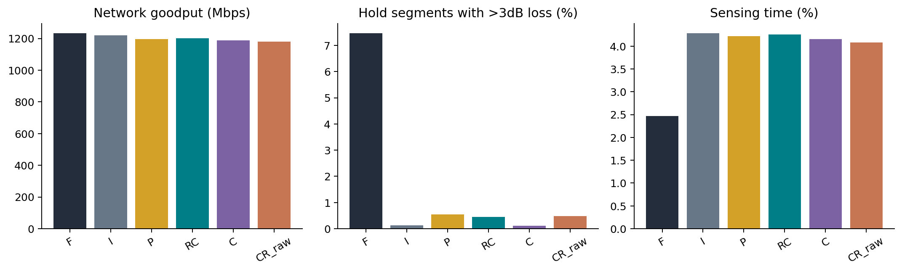
图 5：主实验 30 个配对世界。保持段 3 dB 失效与实际丢包并非同一指标。
main_paired.csv
| 差值 | 均值 Mbps | CI 下界 | CI 上界 | 配对数 | RC 吞吐更高场数 |
|---|
| RC - F | -31.881 | -35.914 | -27.677 | 30 | 0 |
| RC - I | -18.023 | -21.869 | -14.138 | 30 | 0 |
| RC - P | 5.331 | 3.914 | 6.654 | 30 | 26 |
| RC - C | 13.862 | 11.351 | 16.293 | 30 | 29 |
| RC - CR_raw | 21.539 | 18.277 | 24.759 | 30 | 30 |
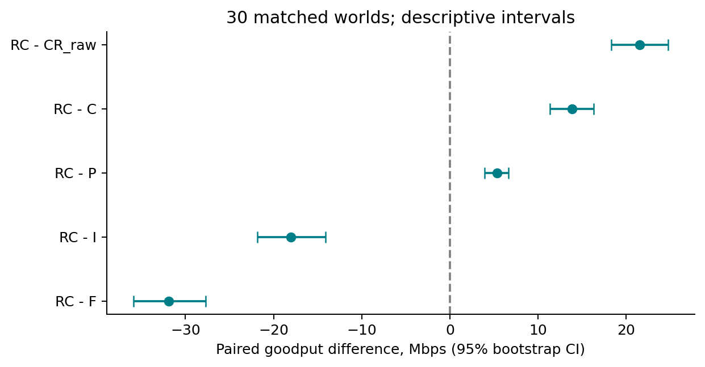
图 6：RC 相对各基线的配对吞吐差。每个点对应相同 30 个世界的均值，区间为逐项 95% bootstrap。
RC 比 P 多 5.331 Mbps，并降低保持段失效，体现门控相对纯路径中心的实用增益。RC 比 C、CR_raw 分别多 13.862、21.539 Mbps，尽管离线位置误差更大。这说明误差在什么年龄、什么角度、什么束宽和什么链路状态出现，比单个整体 RMSE 排名更接近通信目标。
RC 比 I 少 18.023 Mbps，窄束占比为 92.03%，低于 I 的 98.16%；两者感知占比非常接近，约 4.257% 与 4.285%。RC 的弱 10% 用户吞吐约 65.38 Mbps，I 为约 67.60 Mbps，也没有形成弱用户优势。不能仅强调 RC 相对 Chronos 或纯路线模型的正结果而隐去强 IMM 基线。
固定 F 吞吐量最高，约 1233.554 Mbps，感知只占 2.471%，但保持段失效约 7.468%，远高于 RC 的 0.451% 和 I 的 0.133%。在当前链路与 BLER 映射下，偶发超过 3 dB 并没有同等幅度地变成吞吐惩罚，因此固定窄束能拿到高均值。是否允许这种可靠性代价必须由业务需求决定，不能事后创造惩罚系数来让所提方法取胜。
7.1 哪些无人机受益，哪些在拖累
main_behavior_paired.csv
| 行为组 | RC−I 单用户 Mbps | CI 下界 | CI 上界 | 世界数 |
|---|
| local_deviation_rejoin | -1.248 | -1.830 | -0.745 | 30 |
| no_reusable_path | -1.886 | -2.565 | -1.258 | 30 |
| stable_path_global_speed | -0.729 | -1.124 | -0.346 | 30 |
| stable_path_segment_speed | -1.287 | -1.802 | -0.765 | 30 |
| stable_path_segment_speed_stops | -0.760 | -1.030 | -0.490 | 30 |
| stable_path_stable_tempo | -1.115 | -1.566 | -0.674 | 30 |
六类用户的 RC−I 单用户吞吐差均为负：无复用约 −1.886 Mbps，分段变速约 −1.287，绕路回归约 −1.248，稳定节奏约 −1.115，停车约 −0.760，全局变速约 −0.729。差距并非只由无复用用户造成，不能仅删掉困难组就认定核心问题解决。以上按每个世界内同类无人机先平均，再跨世界配对；它回答的是某类用户的服务变化，不能将同类多架无人机作为独立重复。完整表还包含每类用户的感知时间、分配数据时间与不可用时间，可区分“该类被多观察了”和“在相近时隙内得到更低链路速率”。同场各用户争用资源，组间差值不是互不影响的独立机制。
main_fairness.csv
| 策略 | Jain 公平性 | 最弱用户 Mbps | 最强用户 Mbps |
|---|
| C | 0.991 | 62.387 | 88.971 |
| CR_raw | 0.989 | 60.711 | 89.383 |
| F | 0.991 | 67.367 | 92.779 |
| I | 0.991 | 66.864 | 91.638 |
| P | 0.991 | 63.906 | 89.992 |
| RC | 0.991 | 63.882 | 89.974 |
RC 的 FIVE Jain 均值约 0.99110，略高于 I 的 0.99089，但差异很小且尚未作该差值的确认性检验；同时最弱用户与弱 10% 吞吐更低，不能以较高公平指数宣称弱用户受益。Jain 指数越接近 1 越均衡，但高公平性也可能是在所有用户都较低的条件下出现，必须同时看总吞吐和最弱用户。FIVE 主要采用共享时隙服务，MPC 包含欠账约束与不同的时隙优化，二者公平性数字不能直接用于证明某种预测中心优劣。
八、为什么离线预测更好，闭环通信却更差
8.1 第一层：优势时域与实际使用时域不一致——有直接诊断证据
主实验场景 0 中，IMM 的实际数据时间有 79.92% 使用年龄不超过 1 秒的预测，98.31% 不超过 2 秒；RC 分别为 74.40% 和 92.88%。RC 相对 IMM 最大的离线优势出现在长时域，而在线多数时候根本没有使用 5—10 秒预测。这里的“年龄”是距离最近一次发布的时间，不是系统只预测 1 秒；包本身仍发布到 10 秒。单场比例不能直接当作全部 30 场总体值。
case0_age.csv
| 在线策略 | 年龄段 | 数据时间占比 | 本中心角 RMSE° | 同 RC 历史 I 的角 RMSE° |
|---|
| I | 0-1s | 0.799 | 0.189 | — |
| I | 1-2s | 0.184 | 0.272 | — |
| I | 2-10s | 0.017 | 0.350 | — |
| I | all | 1.000 | 0.210 | — |
| RC | 0-1s | 0.744 | 0.216 | 0.190 |
| RC | 1-2s | 0.185 | 0.197 | 0.288 |
| RC | 2-10s | 0.071 | 0.195 | 0.355 |
| RC | all | 1.000 | 0.211 | 0.226 |
更严格的单场诊断是在 RC 自己产生的观测历史上，读取同一预测包内的 IMM 专家作事后对照。0—1 秒 RC 约 0.216°、IMM 专家约 0.190°；1—2 秒 RC 约 0.197°、IMM 约 0.288°；2—10 秒 RC 约 0.195°、IMM 约 0.355°。这支持“RC 在较长年龄有益，但占多数的短年龄不占优”的解释。它只是预测中心的同历史比较；没有重跑替换中心后的闭环，因此不是替换策略的因果吞吐收益。
8.2 第二层：误差头把短期不确定性转成更宽波束——有联合证据，未完成因果隔离
case0_tube.csv
| 中心 | 时域 s | 平均半宽° |
|---|
| I | 0.500 | 0.489 |
| I | 1.000 | 0.817 |
| I | 2.000 | 1.666 |
| I | 5.000 | 5.477 |
| I | 10.000 | 12.442 |
| RC | 0.500 | 0.693 |
| RC | 1.000 | 1.071 |
| RC | 2.000 | 2.035 |
| RC | 5.000 | 4.664 |
| RC | 10.000 | 7.638 |
单场 RC 的 0.5/1/2 秒包络比 IMM 更宽，而 5/10 秒更窄。1 秒约 1.071° 对 0.817°，意味着当前常用短年龄下 RC 的候选动作更保守。与全 30 场窄束占比 92.03% 对 98.16%、吞吐下降同时出现，这是一条一致的解释链。可能来源包括短期中心误差、整段最大误差校准对尾部的放大，以及 common_local 未显式利用路线质量。要证明各因素贡献，需锁定中心/误差头/历史分别替换，不能仅由相关性定因果。
8.3 第三层：差距主要是有效链路速率，不是多花了感知时间——代数分解支持
decomposition_summary.csv
| 分量 | RC−I Mbps | CI 下界 | CI 上界 |
|---|
| total | -18.023 | -21.869 | -14.138 |
| data_time_component | 0.355 | -0.253 | 1.022 |
| effective_rate_component | -18.378 | -22.008 | -14.718 |
令 f=(data_s−unavailable_s)/service_s，r=net_mbps/f，则吞吐 T=f×r。用对称精确分解 ΔT=Δf×平均(r)+Δr×平均(f)，RC−I 的 −18.023 Mbps 中，数据时间项约 +0.355 Mbps，有效速率项约 −18.378 Mbps。也就是说，直接“感知开销扣得太重”并不能解释这次 RC 相对 IMM 的吞吐损失；需要优先看波束增益、实际指向、MCS 与速率映射。分解是记账恒等式，不是独立因果贡献估计。
单场实际平均 SNR：I 约 18.875 dB，RC 约 18.613 dB；最高 MCS 的数据时间份额约 23.67% 与 20.72%，RC 还增加了一部分较低档位。两者平均 BLER 都在约 11.4% 左右。因此不能把吞吐差简单说成 RC 大量掉包，也不能说所有方法已经锁死在最高 MCS。
8.4 第四层：门控目标与通信目标错位——有迹象，仍需验证
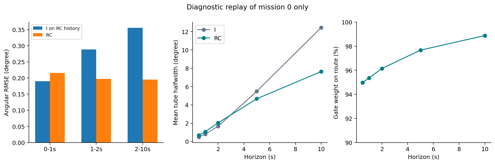
图 7：场景 0 同历史专家误差、包络和门控。图中角 RMSE 按双轴均方定义，与离线指标单位一致；样本与加权口径不同。
场景 0 的路线权重在 0.5 秒已约 95%，10 秒接近 99%。离轨事件里短期 IMM 明明较准，门控仍明显偏向 P。这提示当前平方角误差训练可能更受难例与长时域影响，或路线失效信号不够及时。尚未通过梯度分解、重新训练或反事实门控实验确认具体原因，因此报告将其列为优先假设，而不称为已定位的训练 bug。
8.5 控制实现还应审计的四个接口
代码层面的待验证问题
| 接口事实 | 可能影响 | 建议诊断，尚未执行 |
|---|
| 其他用户沿用先前生成的动作 frontier | 其平均速率基于原发布起点，可能不能反映当前已老化状态 | 按当前 age 重积分候选收益，先离线比较动作差异 |
| 计划速率扣包络最坏损失；结算 MCS 按名义预测 SNR 选 | 规划保守性与执行链路自适应不完全同口径 | 记录计划 MCS/执行 MCS，锁定一致口径做受控对照 |
| 预算贪心修复没有可移动作时可以退出 | 候选感知负载仍可能超过预算，随后 token bucket 延迟请求 | 记录修复失败率、等待和收益损失，区分设计近似与错误 |
| 超过所选刷新间隔不立即视为无有效预测；真正过期阈值为包的 10 s | 刷新到期、包络有效期、预测耗尽三种概念可能混淆 | 分别记录三类期限及真实 3 dB 失效，核对允许的语义 |
单场数据确实存在超过所选刷新间隔仍在发数的时段，但这不能直接命名为“违反认证束宽有效期”：所选间隔可能是收益优化选择，未必等于该束宽最大认证时长。该诊断应使用精确动作、发布包和当前年龄重建。以上问题均尚未通过修改后的配对实验量化，不能据此宣布现有全部结果无效。
九、动作消融与复用率：机制的适用边界
actions_means.csv
| RC 动作策略 | 吞吐 Mbps | 保持段失效 % | 感知 % | 窄束 % | 弱 10% Mbps |
|---|
| RC | 1201.672 | 0.451 | 4.257 | 92.027 | 65.380 |
| fixed | 1229.193 | 6.853 | 2.471 | 100.000 | 67.739 |
| interval_only | 1217.913 | 0.560 | 4.426 | 99.695 | 67.411 |
| width_only | 1003.720 | 0.786 | 2.492 | 53.351 | 37.767 |
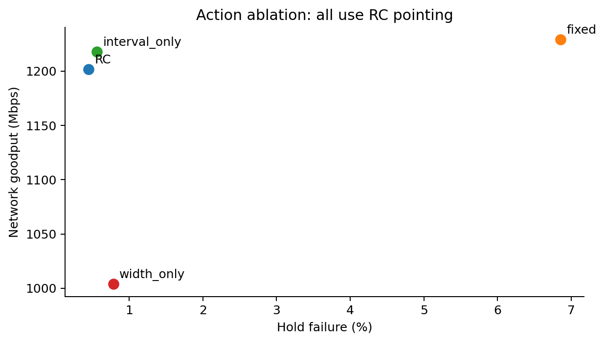
图 8：四种动作规则共享 RC 指向。横轴为保持段失效率，越左越稳；纵轴为吞吐量，越高越好。
只调间隔、保持窄束的 interval_only 得到约 1217.913 Mbps，高于联合束宽/间隔 RC 的 1201.672 Mbps，差约 16.240 Mbps；但保持段失效约 0.560%，高于联合的 0.451%。只调束宽 width_only 约 1003.720 Mbps、窄束占比 53.35%，说明固定周期下靠放宽波束保守兜底，会显著损失阵列增益。fixed 吞吐约 1229.193 Mbps，保持段失效约 6.853%。这些结果支持“联合控制改变了吞吐—风险权衡”，不支持“多一个动作自由度就必然提高实际吞吐”。
联合策略可选动作集更大，理论上在完全正确的目标和精确优化下不应比其子集更差；这里真实收益反而下降，是目标近似、风险约束、模型误差或贪心求解值得审计的信号。不能仅把下降解释为联合控制天生没用，也不能把所有下降都归给优化器而不做验证。
reuse_means.csv
| 目标复用比例 | 策略 | 吞吐 Mbps | 保持段失效 % | 感知 % |
|---|
| 0.000 | I | 1192.403 | 0.251 | 4.717 |
| 0.000 | RC | 1137.660 | 1.320 | 4.617 |
| 0.500 | I | 1209.168 | 0.197 | 4.485 |
| 0.500 | RC | 1182.441 | 0.903 | 4.457 |
| 1.000 | I | 1217.012 | 0.085 | 4.173 |
| 1.000 | RC | 1203.559 | 0.374 | 4.137 |
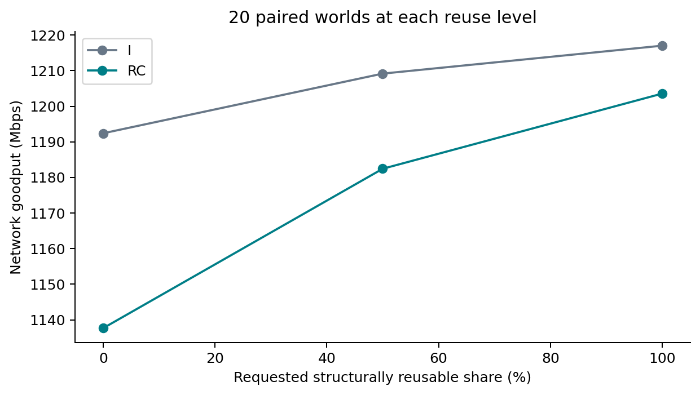
图 9：提高路线复用率会缩小 RC 与 IMM 的吞吐差，但本轮 0%、50%、100% 均未出现 RC 超越。
RC−I 吞吐差在复用率 0%、50%、100% 时分别约 −54.743、−26.727、−13.452 Mbps，配对区间均在 0 以下。这表明 RC 对可复用路线确实敏感，路线假设越吻合，差距越小；但即使全可复用，当前控制链仍没有转化为相对 IMM 的正收益。0% 时 RC 保持段失效约 1.320%，I 约 0.251%，是回退机制需要改进的重要压力场景。
复用率扫描不是纯粹只改一个浮点数：它改变用户的运动组成，也可能改变指向难度和资源竞争。因而各水平内 RC−I 的配对比较更可信；跨水平提升不能全部归因于“记忆被复用的次数”。主场景 87.5% 结构复用与扫描 100% 也不能混为同一分布。
十、训练随机性与 TabPFN：哪些结果稳，哪些对实现敏感
seeds_matched20_means.csv
| 训练种子 | 策略 | 吞吐 Mbps | 保持段失效 % | 窄束 % |
|---|
| 7 | C | 1185.700 | 0.126 | 87.630 |
| 7 | CR_raw | 1178.038 | 0.556 | 86.019 |
| 7 | I | 1215.977 | 0.141 | 98.337 |
| 7 | P | 1194.918 | 0.571 | 91.186 |
| 7 | RC | 1200.272 | 0.438 | 92.867 |
| 11 | C | 1185.700 | 0.126 | 87.630 |
| 11 | CR_raw | 1178.038 | 0.556 | 86.019 |
| 11 | I | 1215.977 | 0.141 | 98.337 |
| 11 | P | 1194.918 | 0.571 | 91.186 |
| 11 | RC | 1207.805 | 0.501 | 95.303 |
| 19 | C | 1185.700 | 0.126 | 87.630 |
| 19 | CR_raw | 1178.038 | 0.556 | 86.019 |
| 19 | I | 1215.977 | 0.141 | 98.337 |
| 19 | P | 1194.918 | 0.571 | 91.186 |
| 19 | RC | 1202.731 | 0.563 | 93.638 |
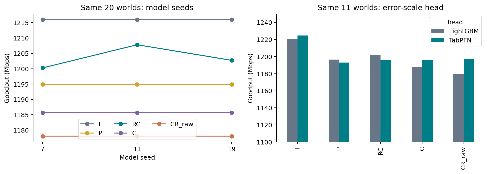
图 10：左图是同 20 个世界的三个训练种子；右图是同 11 个世界更换误差头，纵轴从 1100 Mbps 起，须结合差值表读取。
同 20 场景中，RC−I 吞吐差在 seed 7、11、19 为 −15.705、−8.172、−13.246 Mbps；RC−P 为 +5.354、+12.887、+7.813 Mbps。RC−I 为正的世界数分别为 0、3、0，RC−P 分别为 17、20、20。因此主方向稳定，但幅度对训练种子敏感。I/P/C/CR_raw 的复核结果在部分种子间完全相同，说明物理世界复用及若干组件确定性；不能把这些相同值算作新的独立证据，也不能把 seed 11 挑成唯一主结果。
head_matched11_paired.csv
| 中心 | LGB Mbps | Tab Mbps | Tab−LGB | CI 下界 | CI 上界 | Tab 更高场数 |
|---|
| I | 1220.677 | 1224.550 | 3.872 | 2.084 | 5.753 | 10 |
| P | 1196.416 | 1193.000 | -3.416 | -9.877 | 2.124 | 5 |
| RC | 1201.329 | 1195.547 | -5.783 | -11.243 | -0.737 | 3 |
| C | 1187.923 | 1196.040 | 8.117 | 4.814 | 11.642 | 10 |
| CR_raw | 1179.630 | 1196.979 | 17.349 | 11.723 | 23.012 | 11 |
误差头收益明显依赖预测中心。TabPFN 相对 LightGBM，在 I/C/CR_raw 分别约 +3.872/+8.117/+17.349 Mbps，而 RC 约 −5.783 Mbps、P 约 −3.416 Mbps。RC 差值区间约 [−11.243, −0.737]，P 区间跨 0。TabPFN 不是普遍更好，也不是普遍更差；在这 11 场探索性复核中，它改善 Chronos 系列的下游控制，却没有帮助 RC。
需要区分两个比较：更换误差头本身是否有用，以及固定误差头时 RC 相对其他中心是否有用。不能把 TabPFN 的 11 场均值直接对比 LightGBM 的全部 30 场均值，否则场景组成差异会混进模型差异。离线四套 bundle 的 RC 预测表另存 offline_seed_head_RC.csv，能核对中心训练与尺度头变化各自作用。
十一、MPC 主结果：资源节约是亮点，个体风险增益仍有限
mpc_means.csv
| 策略 | 吞吐 Mbps | 感知 % | 观测次数 | 3 dB 数据 % | 弱 10% Mbps | Jain |
|---|
| age_mpc | 1198.333 | 2.700 | 1567.900 | 0.120 | 52.279 | 0.733 |
| joint_mpc | 1197.053 | 2.594 | 1506.400 | 0.201 | 52.042 | 0.725 |
| myopic | 1009.911 | 0.856 | 497.267 | 0.592 | 7.994 | 0.672 |
| rotation | 1196.098 | 5.000 | 2904.000 | 0.000 | 51.155 | 0.706 |
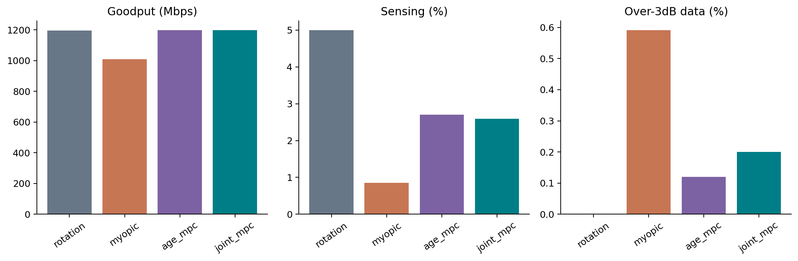
图 11：独立 MPC 实验线，30 世界、4 策略。3 dB 列是数据服务时间口径，不应与 FIVE 保持段失效比例横比。
mpc_paired.csv
| 比较 | 指标 | 差值 | CI 下界 | CI 上界 |
|---|
| joint_mpc - rotation | Mbps | 0.954 | -2.653 | 4.579 |
| joint_mpc - rotation | sensing_pct | -2.406 | -2.484 | -2.323 |
| joint_mpc - rotation | over3_pct | 0.200 | 0.137 | 0.268 |
| joint_mpc - age_mpc | Mbps | -1.280 | -3.724 | 1.454 |
| joint_mpc - age_mpc | sensing_pct | -0.106 | -0.121 | -0.091 |
| joint_mpc - age_mpc | over3_pct | 0.081 | 0.018 | 0.145 |
| joint_mpc - myopic | Mbps | 187.142 | 178.222 | 196.244 |
| joint_mpc - myopic | sensing_pct | 1.737 | 1.679 | 1.798 |
| joint_mpc - myopic | over3_pct | -0.391 | -0.575 | -0.221 |
相对 rotation，joint_mpc 观测次数从平均 2904 次降至 1506.4 次，感知时间约少 4.333 秒/180.048 秒服务，约减少 48.1%。吞吐量 +0.954 Mbps，区间约 [−2.653, 4.579]，在本样本中没有明确吞吐损失或增益。这是有价值的结果：用预测决定什么时候值得观察，可以在类似吞吐水平下降低感知占用。但同时 3 dB 数据失效由约 0.0004% 升至 0.2006%，不能省略这项可靠性代价。
age_mpc 本身已经把感知占比降至约 2.700%，吞吐约 1198.333 Mbps。joint_mpc 再减少约 61.5 次观测、0.191 秒感知时间，感知占比下降 0.106 个百分点，约相对再省 3.92%；吞吐差 −1.280 Mbps，区间跨 0。它的 3 dB 数据失效增加约 0.081 个百分点，Jain 约 0.7248，低于 age_mpc 的 0.7330。因此“多步调度有效”的证据强于“个体风险带来很大额外闭环提升”的证据。
myopic 感知更少，约 0.856%，但吞吐仅约 1009.911 Mbps，最弱 10% 用户仅约 7.994 Mbps，预测过期/无可用服务累计约 20.518 秒，终端欠账约 28,846 Mbit。它说明短视地看感知成本、缺乏跨时域服务安排会漏掉未来损失。仅按“少感知”排名会把严重服务退化误判为优点。joint_mpc 相对 myopic 增加约 187.142 Mbps；两者多处控制行为不同，不能把差值全部归为个体风险模型。
11.1 风险预测与包络本身是否有效
risk_quality.csv
| 时域 s | 发布样本 | 实际累计风险 | 预测风险 | 个体 Brier | 年龄 Brier |
|---|
| 1 | 2880 | 0.011 | 0.014 | 0.004 | 0.011 |
| 2 | 2880 | 0.084 | 0.081 | 0.052 | 0.078 |
| 5 | 2880 | 0.294 | 0.294 | 0.104 | 0.208 |
| 10 | 2880 | 0.469 | 0.440 | 0.121 | 0.251 |
tube_quality.csv
| 时域 s | 发布样本 | 包络覆盖 | 方位半宽° | 俯仰半宽° |
|---|
| 1 | 2880 | 0.981 | 1.211 | 0.585 |
| 2 | 2880 | 0.971 | 2.304 | 0.972 |
| 5 | 2880 | 0.953 | 5.963 | 2.256 |
| 10 | 2880 | 0.944 | 11.062 | 4.176 |
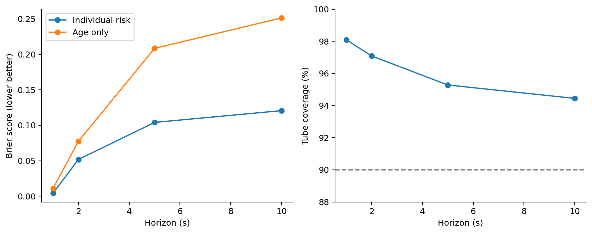
图 12：个体风险明显改善 Brier；角度包络整体覆盖高于名义 90%。重复发布来自 30 个世界，不能按 2880 个独立样本计算高精度置信度。
5 秒 Brier 约 0.104 对年龄曲线 0.208，10 秒约 0.121 对 0.251，个体信息在长时域状态识别上有明显价值。预测均值与观测均值较接近，并不自动证明每一风险区间和每类无人机都校准良好；Brier 同时包含区分度与校准，不能只叫“校准误差”。包络 1/2/5/10 秒覆盖约 98.09/97.08/95.28/94.44%，偏保守可能降低窄束可行时间，但是否过度保守仍需结合动作价值。
个体风险优势在 5—10 秒更明显，而慢层 MPC 只看约 1.984 秒；规划长度与主要收益时域可能不匹配。即使延长窗口也不保证更好，因为远期收益误差会积累，搜索复杂度也增加。应先检查预测刷新价值与实际回放的偏差，再考虑有控制的窗口扫描。
十二、143 次刷新干预：感知收益何时回本
refresh_summary.csv
| 回放口径 | 事件数 | 刷新胜出 | 平均增益 Mbit | 中位数 | p25 | p75 |
|---|
| first | 143 | 9 | -3.949 | -4.160 | -5.089 | -2.823 |
| matched | 143 | 55 | -1.861 | -2.869 | -9.461 | 7.043 |
| locked | 143 | 52 | 1.152 | -2.180 | -5.939 | 2.984 |
| 1s | 143 | 57 | -0.720 | -2.292 | -8.319 | 8.350 |
| 3s | 143 | 72 | 17.056 | 2.160 | -27.054 | 64.392 |
| 5s | 143 | 79 | 30.012 | 10.608 | -46.984 | 113.213 |
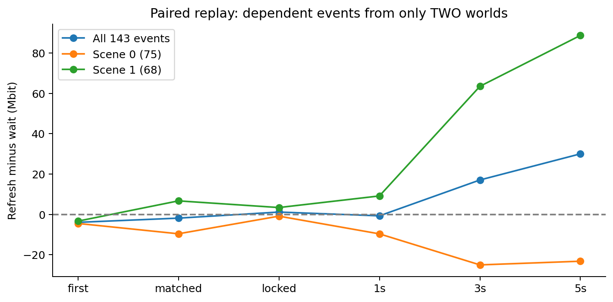
图 13：刷新减等待的累计有效比特差，两个世界方向差异很大。它是机制回放，不是足以证明总体最优周期的独立网络试验。
first 为首个 0.062 秒时隙；matched 为同一剩余规划长度的回放窗口；locked 在该匹配窗口内冻结后续刷新计划，帮助隔离后续重规划；1/3/5 秒则允许按回放规则继续控制。因此这些横轴不全是同一种“时长逐步增加”的实验条件，尤其 locked 与 matched 不能只当作时间点比较。
首时隙刷新平均损失约 3.949 Mbit，143 次仅 9 次胜出；1 秒平均仍约 −0.720 Mbit。3 秒、5 秒均值转为约 +17.056、+30.012 Mbit，中位数约 +2.160、+10.608 Mbit，表明感知可能先付成本、后回收收益。但 5 秒仍有 64 次未胜出，不能归纳为“超过 3 秒感知总划算”。
两个世界的差异比总体均值更重要：scene 0 的 5 秒平均增益约 −23.220 Mbit，scene 1 约 +88.723 Mbit。只看总体正均值会掩盖环境依赖。事件来自同一运行路径和重叠回放窗口，不为 143 次事件给常规独立样本显著性结论；有效独立世界仅 2 个。
刷新价值预测仍有偏差。原规划在首时隙几乎总预测刷新吃亏，方向正确 134/143，但 9 个实际有益刷新都被判负；对 locked 窗口，预测平均约 −2.236 Mbit，实际约 +1.152 Mbit，均值偏差约 −3.387 Mbit，平均绝对误差约 10.482 Mbit。使用新观测后的状态进行审计，并未消除整个窗口偏差。风险分类更准确只是链条的一环，未来刷新后的收益近似与重规划效应值得优先研究。
十三、参数是不是“不服务研究”：怎么检查才公平
当前环境确实偏向短龄预测：16×3.1 ms/5%=0.992 s，意味着只要大致均匀使用预算，约每秒就能观测每架无人机一次。在这个区间 IMM 很强，路线的长时域优势难以发挥。但这不等于参数必然不合理：它代表一个感知较便宜的工作区间。正确研究问题是识别何种感知成本、预算、运动难度和链路裕量下路线记忆更有价值，而不是把某组参数调到 RC 胜出后停止。
可解释的解析尺度；不是已运行结果
| N | 单次成本 ms | 共享预算 | 均匀刷新间隔下界 s |
|---|
| 16 | 3.1 | 5% | 0.992 |
| 16 | 3.1 | 2% | 2.480 |
| 16 | 3.1 | 1% | 4.960 |
| 16 | 6.2 | 5% | 1.984 |
| 16 | 12.4 | 5% | 3.968 |
| 8 | 3.1 | 5% | 0.496 |
| 32 | 3.1 | 5% | 1.984 |
上表只由 N×c/ρ 得出，不是预测 RC 将在哪个点获胜，也不是证明真实雷达必须花这么久。c=3.1 ms 的现实依据需要感知波形、波束搜索、处理和调度实现给出，不能把某个标准的周期或时隙长度直接当成每次感知成本。通信标准的 CQI/BLER 目标与本程序自定义 3 dB 几何风险也不是同一约束。
建议的后续实验优先级
| 优先级 | 问题与最小对照 | 控制混杂与判定 |
|---|
| P0 | 核对年龄、frontier、MCS、到期及预算修复接口 | 先只加日志/回放，若修复语义则保留原结果并新版本重测 |
| P1 | 固定中心换 common_local/full；固定包络换中心 | 先小规模新验证世界；确认短期包络与窄束选择是否改善 |
| P1 | 门控按年龄/事件的误差与通信敏感性诊断 | 同历史专家比较，单列无复用、离轨和低支持场景 |
| P1 | 预算 5/2/1% 或成本 3.1/6.2/12.4 ms 单轴扫描 | 所有方法、固定 F 都重新在独立验证集选动作；不能只调 RC |
| P2 | 链路裕量 ±3 dB、运动与观测噪声变化 | 先明确改功率、距离或噪声哪一项；每次只改变可解释因素 |
| P2 | MPC 预测刷新价值、2/4/6 s 窗口 | 先验证收益模型，再看长窗口；报告计算成本和稳定性 |
| P2 | N=8/16/32 与更严格服务质量约束 | 区分用户竞争与预测误差；约束来自业务需求 |
| P3 | 真实重复飞行轨迹与部署时延 | 轨迹验证不直接等于真实毫米波链路吞吐证明 |
预算变动也会改变预热观测间隔 max(1,Nc/ρ)。若直接修改预算，系统初始路线记忆质量和在线刷新能力会一起变。应分两种实验：固定预热数据，只改变服务期预算；或者全过程使用该预算，研究完整运行条件。二者分别回答控制能力与全生命周期表现。
将 32×32 改成 64×64 时，不仅波束变窄，理想阵列增益也增加约 6 dB。若希望只研究更敏感的指向误差，应另设保持 EIRP 或匹配链路裕量的对照；否则吞吐变化可能主要来自增益。更低发射功率、较远距离和更大阴影也可能改变方法排序，不能先假定一定有利于 RC。
所有方案目前只是建议，没有改动配置或重跑。由于既有测试结果已用于提出这些假设，新的方法选择应使用新验证世界，最终用独立的新测试世界确认；不要不断用同一 30 场筛选到满意参数后还当作未见测试集。
十四、为什么完整运行很慢，能否部署
runtime_descriptive.csv
| 误差头 | 种子 | 策略 | 作业数 | 平均作业秒 | 中位作业秒 | 完整更新秒 |
|---|
| lightgbm | 7 | C | 30 | 928.130 | 1023.725 | 0.169 |
| lightgbm | 7 | CR_raw | 30 | 1011.762 | 1093.107 | 0.187 |
| lightgbm | 7 | I | 90 | 366.262 | 362.570 | 0.062 |
| lightgbm | 7 | RC | 90 | 372.014 | 370.630 | 0.064 |
| tabpfn | 7 | C | 11 | 3127.726 | 3354.144 | 0.574 |
| tabpfn | 7 | CR_raw | 11 | 3104.823 | 3368.906 | 0.577 |
| tabpfn | 7 | I | 11 | 2591.855 | 2849.020 | 0.473 |
| tabpfn | 7 | RC | 11 | 2558.975 | 2802.498 | 0.465 |
长时间主要来自数百场完整闭环仿真，每场还包括 180 秒预热、180 秒服务及数千次真实观测更新；每次更新包含滤波、路线维护、多个诊断/专家、误差头、动作筛选和日志。Chronos 需要反复运行冻结模型；TabPFN 误差头每次仍要进行预训练模型上下文推理。训练完成并不会让这些每次更新的计算消失。
表中的作业耗时混合了不同实验块、迁移前后硬件与并发竞争，不能当作单卡部署基准，更不能拿两个时段的单任务耗时直接证明加速或减速。粗略可见 LightGBM RC 每场数分钟、Chronos 对照十几分钟、TabPFN 数十分钟；任务级并发能提高总完成速度，却可能增加单任务延迟。
主 RC 是路线进度 + IMM + 小门控 + LightGBM 误差头，不需要 Chronos 或 TabPFN。因而“重型对照跑得慢”不直接否定主方法的部署价值。但当前 mean_update_cpu_s 约几十毫秒是整套更新的批量运行测量，还未做独占硬件的端到端延迟、p95/p99、实时调度和显存峰值基准。仿真将计算延迟设为 0，通信收益没有计入计算等待，因此目前不能宣称实时落地已验证。
离线验证较快，是因为同一批预测包与标签可以复用，并可按严格等价条件缓存误差头输出；闭环中一次动作改变会改变下一次观测时刻、历史和预测，不能把不同策略全部套用同一离线预测文件。本次 TabPFN 加速保留原生查询粒度；改变查询分组导致数值变化的方案没有作为等价加速直接替代。工程提速与科学机制修改需要分别记录。
十五、结果可信度、可复核性与尚缺的证据
完成状态、配对数量、原始计划与事后范围调整均保留。正式 source_unchanged 审计为真；报告分析只读原始结果，生成独立 tables/figures。FIVE 主实验另外核对 180 份 metrics 的时钟、总比特与分组比特一致性；MPC verification 记录 120 个策略场景、348480 个 tick，最大时钟误差约 6.54×10⁻¹³ 秒并通过。它们验证工程账本与文件完成，不自动证明建模假设正确。
源代码与配置并非同一层级的证据。research.json 虽带有 design_only_not_runtime_config 标签，实际 load_config 仍读取其中运行字段；其中描述的未来实验矩阵不能作为已执行清单。MPC gate/train/cal/test 的数字 ID 部分重复，但实际随机世界还由数据命名空间区分，不能仅看编号相同就判断泄漏；同样也不能只凭一个布尔审计声称任何形式的泄漏都不可能。应结合数据生成键、缓存绑定与路径分区审查。
现有主要缺口：真实链路/真实飞行验证；独立新测试上的参数敏感性；全流程计算时延入账；更大用户规模；full 头闭环验证；门控失效识别与严格回退；控制近似误差的隔离；业务定义的可靠性约束；多种新世界下刷新干预。缺少这些不抹去已得到的结果，但限定了论文结论的适用范围。
本报告没有把 bootstrap 区间解释为对真实世界部署的保证，也没有将两条实验线拼接成一个端到端已验证架构。长时域预测、整段包络、风险 Brier、闭环吞吐和资源开销分别回答不同问题，只有全链条都验证后才可作更强系统结论。
十六、可供汇报取舍的研究主线与回答
16.1 推荐 10 页汇报顺序
可直接据此制作幻灯片
| 页 | 讲什么 | 建议证据 |
|---|
| 1 | 任务：共享感知时间下，路线记忆是否有通信价值 | 问题图与三类代价：误差、增益、感知时间 |
| 2 | 两条实验线及方法关系 | I/P/RC/C/CR_raw 与 age/joint MPC 对照 |
| 3 | RC 的路线进度与门控机制 | 因果数据路径、无真实未来输入 |
| 4 | 长时域预测优势及与 Chronos 的边界 | 图 1、图 2，保留强基线 |
| 5 | 主闭环收益与负结果 | 图 5、图 6，重点 RC−P、RC−I |
| 6 | 为什么预测好却通信差 | 图 7，年龄分布 + 包络 + 精确吞吐分解 |
| 7 | 动作/复用/种子验证 | 图 8—10，展示稳定性和失败边界 |
| 8 | MPC 节省感知资源 | 图 11、图 12，区分 rotation 与 age 消融 |
| 9 | 刷新收益延迟与当前决策近似 | 图 13，强调只有两世界 |
| 10 | 下一步最小而有判别力的实验 | 先审计，再固定因素对照，再新测试 |
16.2 哪些主张可以讲，哪些应暂缓
证据分级
| 级别 | 可以使用的表述 |
|---|
| 直接支持 | RC 在本次离线分布上的中长期预测明显优于 IMM；路线记忆有信息价值。 |
| 直接支持 | 固定 LightGBM 控制框架中，RC 相对 P/C/CR_raw 提高主闭环吞吐，但未超过 IMM。 |
| 直接支持 | MPC 相对轮询显著减少感知占用，吞吐均值接近，同时带来一定几何可靠性代价。 |
| 诊断支持 | 闭环常用短年龄与离线长时域优势错配，短期包络和束宽选择是重要解释线索。 |
| 待验证 | 完整路线特征误差头、通信相关门控目标或更紧感知预算能否扭转 RC−IMM 差距。 |
| 暂不支持 | RC 全面最佳；个体风险 MPC 大幅增益；真实系统实时可用；已保证同等可靠性。 |
16.3 老师可能追问的十个问题
问：为什么需要路线模型，IMM 已经很强？答：当前频繁感知区间 IMM 很强；稀疏观测与长预测时域下，空间路线先验显著降低误差。研究价值是刻画其有用区间并将信息转化为行动，当前闭环尚未完成这一步，不能回避。
问：是不是把场景设成重复路线就天然偏袒 RC？答：正式包含停车、变速、绕路、无可复用和 0%—100% 扫描；RC 在完全无复用时确实退化，100% 时仍未超过 IMM。这些结果既说明适用性，也暴露回退与控制问题。
问：Chronos 离线更好，为什么不直接用它？答：闭环不仅依赖点误差；短龄误差、包络、动作选择和每次推理成本都重要。当前 RC 闭环好于 C，但仍应保留 C 的离线优势，不把两类指标混为一谈。
问：门控到底贡献多少？答：应看 RC−P，而不是 RC−IMM。当前 10 秒角 RMSE 改进约 6.3%，主闭环多约 5.33 Mbps；贡献中等且情景相关，不能称为全部性能来源。
问：为什么不用固定 F？答：F 在当前吞吐目标下确实很有竞争力，代价是较多保持段 3 dB 失效。若应用只关心均值且容忍这些事件，F 是合理选择；若需要稳定指向，应给出可解释的业务可靠性要求并重新公平比较。
问：joint_mpc 是否证明个体风险很有用？答：风险预测更准证据明确；相对 age_mpc 的闭环增益主要是小幅减少观测，吞吐无明确提升，可靠性略退。较强结论应是多步资源安排相对轮询/短视有效，个体风险到价值的映射仍有研究空间。
问：调低预算是否属于调参凑结果？答：如果只展示 RC 取胜的点，是；如果事先按物理成本定义预算范围、同等重调所有基线、展示完整趋势和新测试世界，就属于适用边界研究。当前没有改这些参数。
问：现有样本是不是已经足够？答：30 配对世界能支持当前均值差的有用判断；11 场 TabPFN 和 2 世界刷新回放适合探索。更多重复同类结果的价值有限，应优先补有判别力的因果消融与新条件。
问：预测推理贵还有意义吗？答：主 RC 不依赖基础模型，成本结构较轻；但部署要看全更新延迟与实时期限，当前仿真零计算延迟不能证明部署。需要专门基准，不能拿并发科研作业速度代替。
问：最优先做什么？答：先检查在线年龄和控制接口，把已发现的同历史短期误差、短期包络和 MCS 差异量化；然后仅替换误差头或门控做受控验证。它比再增加同配置重复次数更能解释当前问题。
十七、交付物、复核入口与迁移说明
压缩包同时包含报告 PDF（汇报阅读）、DOCX（可编辑）、HTML（检索与点击图表）、全部派生 CSV、PNG/SVG 图、只读分析脚本、完整正式运行目录、科学代码与配置、调度工程代码、依赖记录及预训练权重。原始正式结果包含离线数据、四套训练 bundle、网络指标与保留的详细日志、MPC 数据/模型、配对回放、完成审计和运行历史。大部分非代表场景只保留紧凑指标，这是原运行的日志策略，不是本次打包删减。
报告正文引用的数据表均位于 report/tables；原始正式证据位于 formal_execution/run_20261117_001732；科学代码位于 code/routeclock_server。压缩包根目录有阅读说明、文件清单及每文件 SHA-256；外部另有整个 ZIP 的 SHA-256。此包保留当前已生成结果与复核材料，不包含 Python 虚拟环境和旧服务器迁移压缩包。换服务器后需按依赖记录重建环境，并核对绝对路径、GPU/驱动和模型缓存；不能承诺直接解压即可继续启动。
结果与代码的对应入口
| 内容 | 压缩包内相对位置 |
|---|
| 最终清单/批准范围 | formal_execution/run_20261117_001732/comparison/completion_audit.json；scope_amendment.json |
| 原始逐场指标 | …/comparison/all_network_jobs.csv；five/network/*/*/*/metrics.json |
| 离线点预测与有效期 | …/five/{lightgbm_7,lightgbm_11,lightgbm_19,tabpfn_7}/{forecast,deadlines,gate_events}.csv |
| MPC 结果/风险/包络 | …/mpc_formal/{network_results,risk_quality,tube_quality}.csv |
| 刷新配对及预测审计 | …/paired/{paired_events,refresh_value_audit,prediction_check,summary}.csv |
| FIVE 预测/校准/调度 | code/routeclock_server/routeclock_five_20261115/routeclock/{memory,predictors,training,validity,scheduler,simulator,holding}.py |
| MPC 风险与控制 | code/routeclock_server/routeclock_server_full/mpc/{forecast_training,risk,control,paired_refresh}.py |
| 分析复现 | report/analysis/analyze_results.py；analyze_additional.py；report_content.py；build_report.py |
复现分析时先运行 analyze_results.py <正式运行目录> <report目录>，再运行 analyze_additional.py <正式运行目录>；使用 numpy、pandas、matplotlib。报告渲染另需 python-docx、reportlab、fonttools、Pillow，静态中文字体与开放字体许可证位于 assets。报告内容脚本读派生 CSV 重新生成文档；所有路径以交付包目录结构为准，默认服务器绝对路径仅作为本次执行默认值。
附录：派生数据表索引
actions_means.csv：4 行、13 列。
actions_paired.csv：24 行、7 列。
all_network_descriptive.csv：30 行、53 列。
case0_age.csv：8 行、5 列。
case0_gate.csv：5 行、2 列。
case0_mcs.csv：6 行、3 列。
case0_summary.csv：2 行、9 列。
case0_tube.csv：10 行、3 列。
decomposition_summary.csv：3 行、6 列。
gate_event_means.csv：16 行、9 列。
head_matched11_means.csv：10 行、14 列。
head_matched11_paired.csv：60 行、9 列。
main_accounting_audit.csv：180 行、5 列。
main_behavior_means.csv：36 行、6 列。
main_behavior_paired.csv：18 行、6 列。
main_fairness.csv：6 行、5 列。
main_means.csv：6 行、13 列。
main_paired.csv：60 行、7 列。
main_per_uav.csv：2880 行、8 列。
mpc_means.csv：4 行、15 列。
mpc_paired.csv：21 行、7 列。
offline_behavior_10s.csv：30 行、7 列。
offline_horizons.csv：35 行、6 列。
offline_paired.csv：112 行、8 列。
offline_per_route.csv：14000 行、8 列。
offline_protocol.csv：210 行、7 列。
offline_seed_head_RC.csv：16 行、7 列。
offline_validity.csv：32 行、15 列。
offline_validity_cluster_ci.csv：62 行、8 列。
refresh_payback.csv：4 行、12 列。
refresh_prediction_check.csv：28 行、12 列。
refresh_summary.csv：24 行、12 列。
reuse_means.csv：6 行、14 列。
reuse_paired.csv：24 行、8 列。
risk_quality.csv：4 行、6 列。
runtime_descriptive.csv：24 行、9 列。
seeds_matched20_means.csv：15 行、14 列。
seeds_matched20_paired.csv：36 行、8 列。
throughput_decomposition.csv：30 行、4 列。
tube_quality.csv：4 行、5 列。